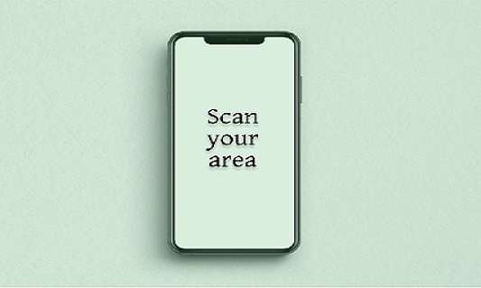
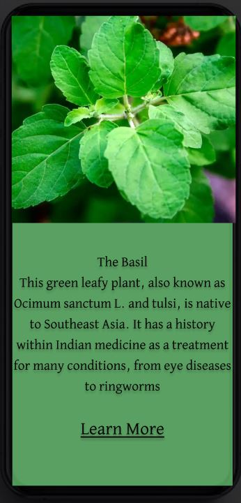

Timely consciousness
How well do each of us understand the symbols in the world that is moving around us?
Who can take one look at this very unique flower and know what it’s called and how it’s used?
And a historical symbol of France, some might know its name but what about the significant symbol it represents today? How will they know?
Now everyone today can finally understand the treasures that surround our interaction today, with the new Timely consciousness app.
We have access to a unfathomable range of data over the internet but we can’t always know the name of what we are searching for.


So now you don’t have to. Just scan what you want to learn more about and our app scours the internet so you don’t have to.
We all have access to so much valuable information, so why not use it effectively? Scan and understand the rich history that surrounds us.

Discover, Scan, Learn
Credits
Anon., 1999. Arc de Triomphe Présentation du monument. [Online] Available at: https://www.cometoparis.com/paris-guide/paris-monuments/arc-de-triomphe-s928#:~:text=The%20Arc%20de%20Triomphe%20honors,from%20the%20First%20World%20War. [Accessed 15 August 2023].
Anon., 2023. THE CHAMPS-ÉLYSÉES AND THE ARC DE TRIOMPHE. [Online] Available at: https://www.baume-hotel-paris.com/monuments/arcdetriomphe/ [Accessed 13 August 2023].
Anon., 2023. Top 10 Coolest Looking Animals. [Online] Available at: https://www.animalsaroundtheglobe.com/coolest-looking-animals/ [Accessed 15 August 2023].
Anon., n.d. https://unsplash.com/s/photos/iphone-screen. [Online] Available at: https://unsplash.com/s/photos/iphone-screen [Accessed 13 August 2023].
Anon., n.d. Iresine herbstii (bloodleaf). [Online] Available at: https://www.gardenia.net/plant/iresine-herbstii [Accessed 15 August 2023].
Brady, S., 2020. Japan's record-breaking bullet train can also run during earthquakes. [Online] Available at: https://www.lonelyplanet.com/news/japan-n700s-bullet-train [Accessed 15 August 2023].
McCulloch, M. & Banks, W., 2018. https://www.healthline.com/health/food-nutrition/basil-benefits#Not-your-basic-basil. [Online] Available at: https://www.healthline.com/health/food-nutrition/basil-benefits [Accessed 13 August 2023].